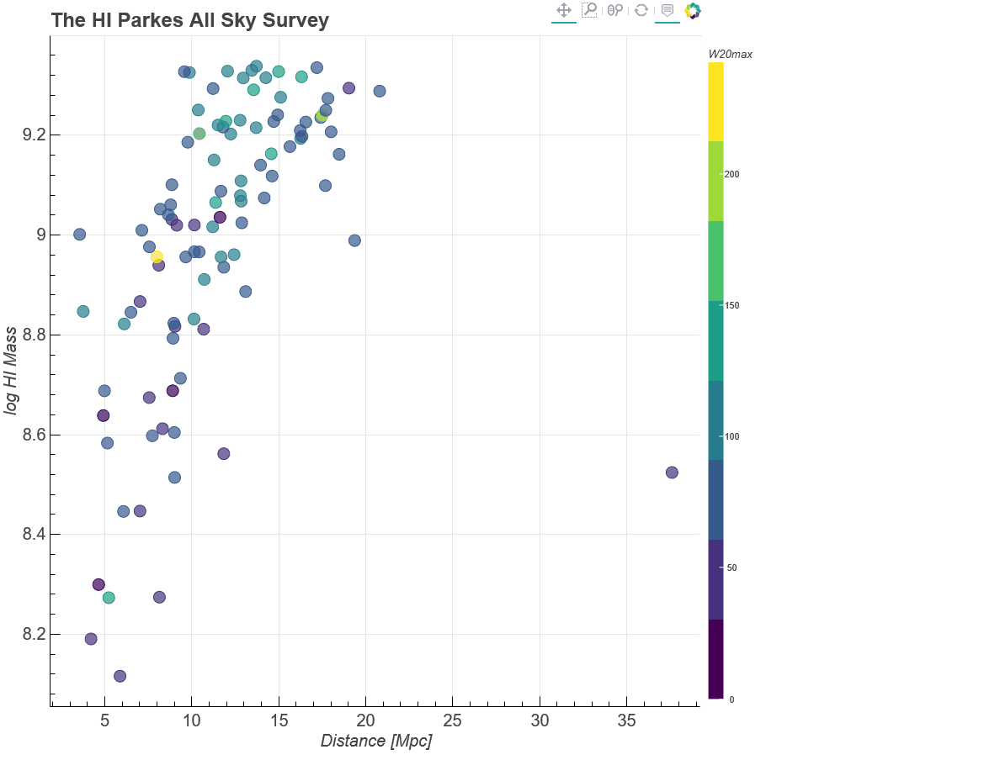
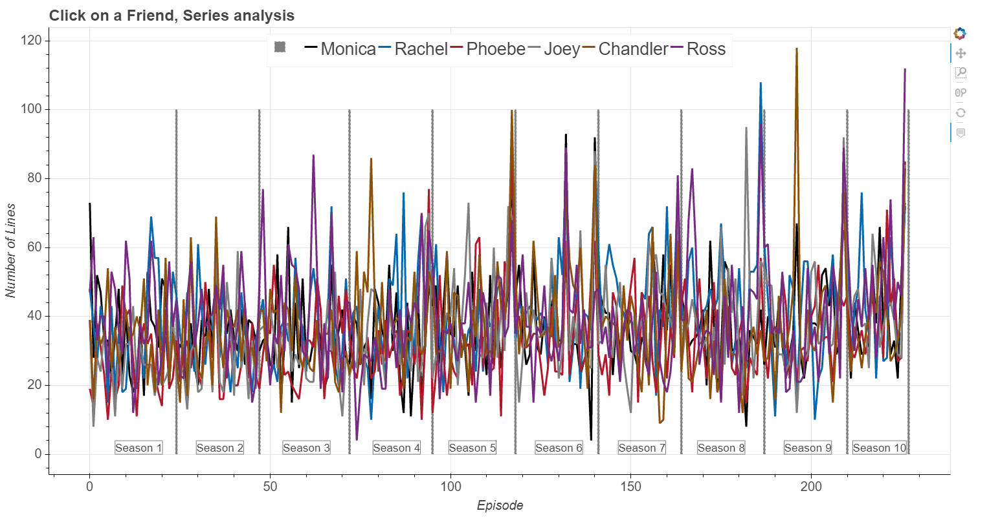
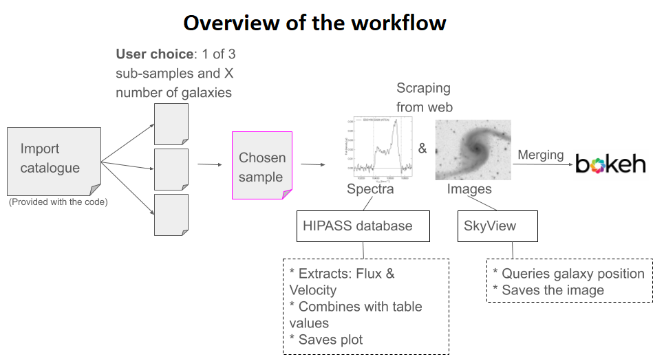
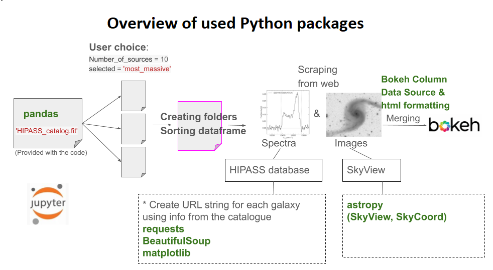

Interactive exploration of multi-wavelength data-sets:
- Contributed project to National Optical Astronomy Observatory Data Lab. I developed a python script in jupyter notebook for an interactive exploration of multi-wavelength data-sets, published at DataLab. The script is also available on my GitHub.. Firstly, from the loaded HIPASS catalogue (Meyer et al. 2004) , script creates url-s and extracts HI spectral information from the HIPASS database and plots the spectrum of each source. Secondly, script also queries for the optical DSS (or any other available survey) image from SkyView . Finally, spectrum and optical images of each source are joined together using the bokeh package and images are displayed in a popup whenever the user hovers over a specific point. 
- Screenplay analysis. Using python, I performed a detailed analysis and interactive exploration of the TV show 'Friends' screenplay. The script is also available on my GitHub.. Screenplay text is loaded in html format and converted into text format. Script performs text processing on a characted basis for each episode during the show. For interactive visuelization, Bokeh is used. Code is available on my github account. 
Project outline:

